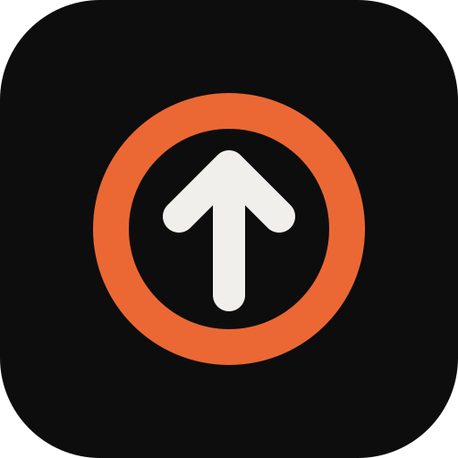

Overload
Progressão de carga para musculação, com metas semanais e mensais por exercício e por grupamento muscular.
O que o Overload faz
- Registra cada série com um toque ou com a voz.
- Calcula a carga e as repetições do próximo treino (dupla progressão).
- Acompanha metas da semana e do mês, com exportação e importação em planilha.
- Mostra a execução correta de cada exercício.
- Funciona no navegador do celular, pode ser instalado na tela inicial e funciona sem internet.
- Disponível em português, inglês e espanhol.
Login com Google
O login é opcional. Com ele, o app guarda uma cópia dos seus treinos numa pasta "Overload" do seu próprio Google Drive, para você usar em qualquer aparelho. O app só consegue acessar os arquivos que ele mesmo cria; não vê nem altera nenhum outro arquivo do seu Drive. Não existe servidor do Overload: os dados ficam no seu aparelho e no seu Drive.
Detalhes na política de privacidade.
About Overload (English)
Overload is a free strength-training log with automatic load progression and weekly and monthly goals. Log each set with one tap or by voice. Signing in with Google is optional: it stores a copy of your workouts in an "Overload" folder in your own Google Drive, so you can use the app on any device. The app can only access files it creates itself. There is no Overload server. See the privacy policy.